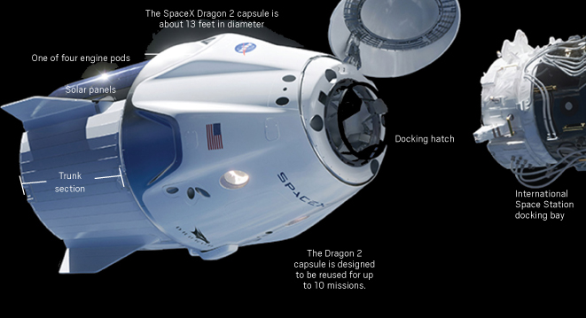
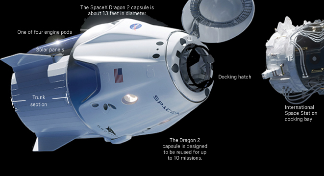

Welcome to SpaceX Dragon
The Dragon spacecraft is capable of carrying up to 7 passengers to and from Earth orbit, and beyond. It is the only spacecraft currently flying that is capable of returning significant amounts of cargo to Earth, and is the first private spacecraft to take humans to the space station.
 


In 2020, SpaceX returned America’s ability to fly NASA astronauts to and from the International Space Station on American vehicles for the first time since 2011. In addition to flying astronauts to space for NASA, SpaceX’s Dragon spacecraft can also carry commercial astronauts to Earth orbit, the ISS or beyond.
The Dragon spacecraft is equipped with 16 Draco thrusters used to orient the spacecraft during the mission, including apogee/perigee maneuvers, orbit adjustment and attitude control. Each Draco thruster is capable of generating 90 pounds of force in the vacuum of space.
The Dragon spacecraft is equipped with two drogue parachutes to stabilize the spacecraft following reentry and four main parachutes to further decelerate the spacecraft prior to landing.
Connect With Us
Contact Us Today For More Info - 555.555.1212